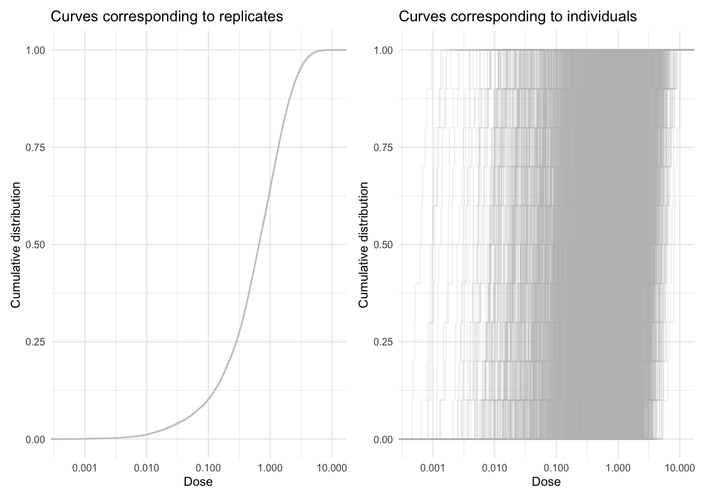

The goal of ameras is to provide a user-friendly interface to analyze association studies with multiple replicates of a noisy exposure using a variety of methods. ameras supports continuous, count, binary, multinomial, and right-censored time-to-event outcomes. For binary outcomes, the nested case-control design is also accommodated. Besides the common exponential relative risk model for the exposure-outcome association with noisy exposure , linear excess relative risk and linear-exponential excess relative risk models can be used.
Installation
To install from CRAN:
install.packages("ameras")To install the development version from GitHub:
# install.packages("pak") # If pak is not already installed
pak::pak("sanderroberti/ameras")Example
This is a basic example which shows you how to fit a simple logistic regression model. First, we visualize the dose uncertainty. In the left panel of the plot below, the empirical cumulative distribution function (ECDF) is plotted for each dose realization. In other words, each curve shows one distribution of dose across individuals. The spread within individual curves reflects the dose range across individuals, while the spread between curves reflects between-realization variation on the cohort level.
In the right panel, ECDFs are plotted for each individual, showing distributions within individuals. A wide spread within individual curves is indicative of large within-individual variation, while the spread between curves reflects between-individual variation.
library(ameras)
#> Loading required package: nimble
#> nimble version 1.4.2 is loaded.
#> For more information on NIMBLE and a User Manual,
#> please visit https://R-nimble.org.
#>
#> Attaching package: 'nimble'
#> The following object is masked from 'package:stats':
#>
#> simulate
#> The following object is masked from 'package:base':
#>
#> declare
data(data, package="ameras")
dosevars <- paste0("V", 1:10)
ecdfplot(data, dosevars)
Next, we apply all available methods to the data:
fit <- ameras(data, family="binomial", Y="Y.binomial", methods=c("RC","ERC","MCML", "FMA", "BMA"),
dosevars=dosevars)
#> Note: BMA may require extensive computation time in the order of multiple hours
#> Fitting RC
#> Fitting ERC
#> Fitting MCML
#> Fitting FMA
#> Fitting BMA
#> Defining model
#> Building model
#> Setting data and initial values
#> Running calculate on model
#> [Note] Any error reports that follow may simply reflect missing values in model variables.
#> Checking model sizes and dimensions
#> [Note] This model is not fully initialized. This is not an error.
#> To see which variables are not initialized, use model$initializeInfo().
#> For more information on model initialization, see help(modelInitialization).
#> Compiling
#> [Note] This may take a minute.
#> [Note] Use 'showCompilerOutput = TRUE' to see C++ compilation details.
#> Compiling
#> [Note] This may take a minute.
#> [Note] Use 'showCompilerOutput = TRUE' to see C++ compilation details.
#> running chain 1...
#> |-------------|-------------|-------------|-------------|
#> |-------------------------------------------------------|
#> running chain 2...
#> |-------------|-------------|-------------|-------------|
#> |-------------------------------------------------------|
summary(fit)
#> Call:
#> ameras(data = data, family = "binomial", Y = "Y.binomial", dosevars = dosevars,
#> methods = c("RC", "ERC", "MCML", "FMA", "BMA"))
#>
#> Total run time: 52.1 seconds
#>
#> Runtime in seconds by method:
#>
#> Method Runtime
#> RC 0.0
#> ERC 8.3
#> MCML 0.1
#> FMA 0.2
#> BMA 43.5
#>
#> Summary of coefficients by method:
#>
#> Method Term Estimate SE Rhat n.eff
#> RC (Intercept) -0.8847 0.07378 NA NA
#> RC dose 0.8020 0.13751 NA NA
#> ERC (Intercept) -0.8849 0.07477 NA NA
#> ERC dose 0.8214 0.14304 NA NA
#> MCML (Intercept) -0.8758 0.07323 NA NA
#> MCML dose 0.7910 0.13644 NA NA
#> FMA (Intercept) -0.8757 0.07317 NA NA
#> FMA dose 0.7907 0.13606 NA NA
#> BMA (Intercept) -0.8734 0.07257 1.01 1081.00
#> BMA dose 0.7929 0.13689 1.01 1068.00
#>
#> Note: confidence intervals not yet computed. Use confint() to add them.Finally, we add confidence intervals to the fit object:
fit <- confint(fit, type=c("wald.orig","percentile"))
summary(fit)
#> Call:
#> ameras(data = data, family = "binomial", Y = "Y.binomial", dosevars = dosevars,
#> methods = c("RC", "ERC", "MCML", "FMA", "BMA"))
#>
#> Total run time: 52.1 seconds
#>
#> Runtime in seconds by method:
#>
#> Method Runtime
#> RC 0.0
#> ERC 8.3
#> MCML 0.1
#> FMA 0.2
#> BMA 43.5
#>
#> Summary of coefficients by method:
#>
#> Method Term Estimate SE CI.lowerbound CI.upperbound Rhat n.eff
#> RC (Intercept) -0.8847 0.07378 -1.0293 -0.7401 NA NA
#> RC dose 0.8020 0.13751 0.5324 1.0715 NA NA
#> ERC (Intercept) -0.8849 0.07477 -1.0314 -0.7384 NA NA
#> ERC dose 0.8214 0.14304 0.5411 1.1018 NA NA
#> MCML (Intercept) -0.8758 0.07323 -1.0193 -0.7323 NA NA
#> MCML dose 0.7910 0.13644 0.5236 1.0584 NA NA
#> FMA (Intercept) -0.8757 0.07317 -1.0184 -0.7326 NA NA
#> FMA dose 0.7907 0.13606 0.5259 1.0561 NA NA
#> BMA (Intercept) -0.8734 0.07257 -1.0166 -0.7347 1.01 1081.00
#> BMA dose 0.7929 0.13689 0.5557 1.0829 1.01 1068.00See the vignettes for additional details on model fitting, confidence intervals, and the use of transformations.